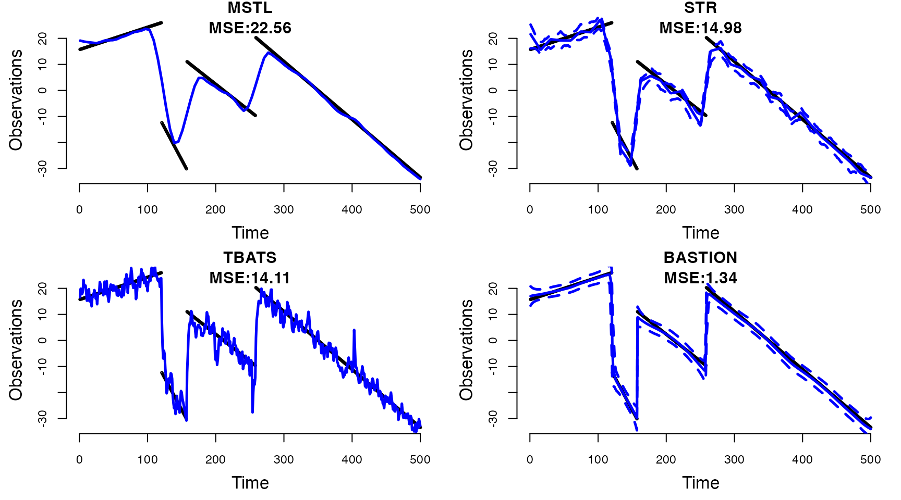

Time-Series Decomposition with BASTION
non-technical_guide.Rmd1. Why BASTION?
Bayesian Adaptive Seasonality Trend decomposition Incorporating Outliers and Noise (BASTION) is a Bayesian framework for decomposing time series into trend and multiple seasonality. Existing decomposition methods, though widely used, exhibit several limitations:
- Difficulty in adapting to abrupt changes in the trend,
- Lack of robustness to outliers and heteroskedasticity
- Absence of uncertainty quantification,
- Inability to accommodate multiple seasonal patterns,
BASTION is the first Bayesian method to effectively address all these challenges in a unified framework.
2. Example with Simulated Data
Let’s consider following simulated data below:
 Figure 1: Simulated Data with abrupt changes in trend,
outliers, and heteroskedastic noise term.
Figure 1: Simulated Data with abrupt changes in trend,
outliers, and heteroskedastic noise term.
BASTION is fitted along with three other existing methods for comparison:
- TBATS by (Alysha M. De Livera & Snyder, 2011)
- MSTL by (Bandara et al., 2021)
- STR by (Dokumentov & Hyndman, 2022).
#devtools::install_github("Jasoncho0914/BASTION")
library(BASTION)
#running below takes about 5 minutes total.
set.seed(40)
BASTION_sim = fit_BASTION(y = y[,"y"],
Ks = list(7,30),
Outlier = TRUE,
cl= 0.95,
obsSV = "SV",
nsave = 2000,
nburn = 4000)
y_ts <- forecast::msts(y[,"y"], seasonal.periods=c(7,30))
TBATS = forecast::tbats(y_ts)
TBATScomp = forecast::tbats.components(TBATS)
STR = stR::AutoSTR(y_ts,robust = TRUE,confidence = 0.95)
MSTL = forecast::mstl(y_ts)One of the defining characteristic of the simulated data we see above is the presence of abrupt changes in trend which occur around t = 74, 156, and 239.
Figure 2: The true trend componenet drawn in black and the estimated trend component by TBATS, MSTL, STR, and BASTION are drawn in blue. Dotted lines represent 95 percent confidence intervals for TBATS and credible regions for STR.
Notice that BASTION provides:
- Adaptive Trend Estimate: BASTION successfully capture the abrupt changes resulting in the lowest mean squared error (MSE), while also providing smooth estimate.
- Robust Uncertainty Quantification: BASTION achieves 98 percent empirical coverage based on its 95% credible region. Only other existing decomposition method that provides uncertainty quantification is STR (Dokumentov & Hyndman, 2022), the confidence interval provided by STR vastly under-covers with 72.4 percent empirical coverage.
3. Daily Electricity Demand in New York State.
Let’s apply BASTION to a real-world dataset by analyzing the average daily electricity demand (measured in megawatts per hour) for New York State. This dataset, sourced from the New York Independent System Operator (NYISO) via the U.S. Energy Information Administration ((EIA), 2024), exhibits a complex long-term trend, intricate seasonal patterns, and heteroskedastic noise. Through time-series decomposition, we will demonstrate how BASTION effectively reveals underlying patterns that are otherwise obscured by noise.
#> ℹ Loading BASTION
#> Welcome to BASTION!
data(NYelectricity) Figure 3: Daily average electricity demand in New York
State from July 1, 2015, to June 30, 2024. The data represent the
average hourly electricity demand for each day, aggregated from hourly
observations.
Figure 3: Daily average electricity demand in New York
State from July 1, 2015, to June 30, 2024. The data represent the
average hourly electricity demand for each day, aggregated from hourly
observations.
Based on the raw data, we see the following:
- Seasonal Patterns: Electricity demand peaks during summer months due to air conditioning and rises again in winter for heating needs.
- Heteroskedasticity: Variability is higher in summer and winter (periods of peak demand) and lower during spring and fall (more stable usage).
- Long-Term Trends: No significant long-term trend is observed in electricity demand. A slight overall decline may indicate the influence of improved energy efficiency over the years.
3.1 Decomposition with BASTION
library(BASTION)
set.seed(4)
BASTION_electric <- fit_BASTION(y = NYelectricity$Demand..MW.,
Ks = list(7,365),
Outlier = TRUE,
sparse = TRUE,
obsSV = "SV",
nsave = 5000,
nburn = 5000)
elec_ts = forecast::msts(NYelectricity$Demand..MW.,seasonal.periods = c(7,365))
STR_elec = stR::AutoSTR(elec_ts,confidence = 0.95)
TBATS_elec = forecast::tbats(elec_ts,use.trend = FALSE,seasonal.periods = c(7,365))
TBATScomp_elec = forecast::tbats.components(TBATS_elec)
MSTL_elec = forecast::mstl(elec_ts) Figure 4: Decomposition of the trend, weekly
seasonality, yearly seasonality, and volatility using BASTION for daily
average electricity demand from July 1, 2015, to June 30, 2024. Dark
grey regions represent the 95% credible intervals. To enhance clarity,
weekly seasonality is displayed for the period April 1, 2016, to July 1,
2016.
Figure 4: Decomposition of the trend, weekly
seasonality, yearly seasonality, and volatility using BASTION for daily
average electricity demand from July 1, 2015, to June 30, 2024. Dark
grey regions represent the 95% credible intervals. To enhance clarity,
weekly seasonality is displayed for the period April 1, 2016, to July 1,
2016.
Notice that BASTION reveals patterns that are not apparent in the raw data:
-
Trend Component:
- A noticeable dip is observed during the winter of 2015–2016, driven by a warmer-than-usual winter caused by a strong El Niño effect, which reduced heating needs.
- From January 2016 to April 2016, electricity demand steadily increased, likely due to a colder-than-usual spring in early 2016 that extended heating needs.
- During the summer of 2016, electricity demand peaked, reflecting increased air conditioning usage during one of the hottest summers on record.
- A noticeable dip in late 2019 likely reflects the impact of COVID-19-related shutdowns.
-
Seasonality:
- In addition to the yearly seasonal pattern driven by weather, weekly pattern reveals that electricity demand is steady on weekdays and decreases on weekends, consistent with common usage patterns.
-
Volatility:
- BASTION’s time-varying volatility estimate highlights heteroskedasticity in the noise term, with volatility also exhibiting seasonal patterns.
- Higher volatility is observed in winter months, while lower volatility occurs during summer, closely aligning with the yearly seasonality pattern.
- BASTION uniquely models volatility directly, providing insights that other decomposition methods cannot.
3.2 Comparisons to Other Models
I would like to direct our attention to the yearly seasonal estimates
in comparison with the ones produced by the three existing models.
 Figure 5: Yearly seasonality estimates for daily
average electricity demand in New York from July 2015 to June 2017.
Estimates from TBATS, MSTL, STR, and BASTION are displayed
respectively.
Figure 5: Yearly seasonality estimates for daily
average electricity demand in New York from July 2015 to June 2017.
Estimates from TBATS, MSTL, STR, and BASTION are displayed
respectively.
Overall Seasonal Patterns: All methods (BASTION, MSTL, STR, and TBATS) capture the East Coast’s seasonal patterns, including peak demand in summer (July and August) due to cooling needs, a decline in fall as temperatures moderate, and a rise in winter reflecting heating requirements.
Holiday Season Effect: BASTION and MSTL detect a 30-day dip in demand (mid-December to mid-January) during the holiday season, reflecting reduced commercial and industrial activity.
BASTION’s Strength: BASTION excels at detecting subtle seasonal changes while maintaining smooth, accurate estimates of components.
4. Conclusion
BASTION effectively addresses the limitations of existing time-series decomposition methods by providing adaptive trend estimation, robust handling of outliers, and direct modeling of volatility. Its ability to capture nuanced seasonal patterns and abrupt changes in the data makes it a valuable tool for real-world applications.
For technical details of BASTION, see the main paper.